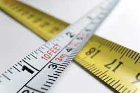

Fatos sobre o Stomatopoda
Categorização
Nome cientifico: Odontodactylus scyllarus| Reino | Filo | Subfilo | Classe | Subclasse | Ordem |
|---|---|---|---|---|---|
| Animalia | Arthropoda | Crustacea | Malacostraca | Hoplocarida | Stomatopoda |
Cores

Possui 16 receptores de cores, tornando-o animal com a maior capacidade de identificar cores da natureza, enquanto o ser humano tem apenas 3 receptores
Ambiente
Vive em águas rasas e quentes
Tamanho
Cresce tipicamente até 30cm
Potência
Apesar de ter um tamanho máximo de 30cm são capazes de dar um soco de 80km/h